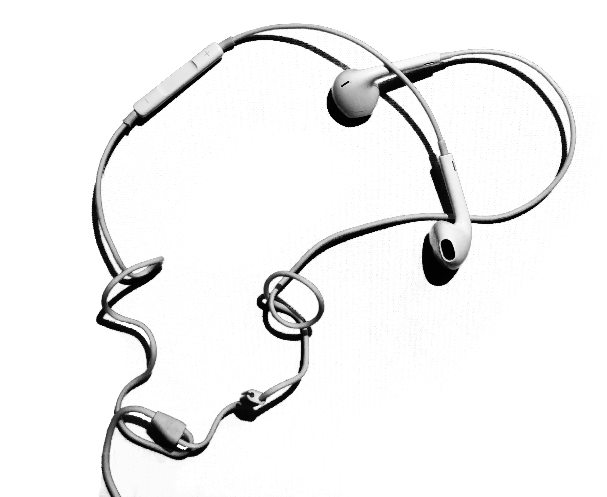

X

the apple earbuds, popularised and initially designed by jonathan ives in 2001, set an unmatchable precedent in headphone design. evidentally streamlining the design of the earbuds, the white plastic headphones became a staple symbol of apple and socio-economic status. shortly after in 2012, apple released an even newer edition, the patent "earpod", which presented a much more organic and sophisticated design featuring a tiny remote that allowed listeners worldwide to control what, when, and the volume of their music.